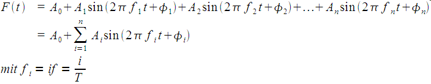

Fouriersynthese
Nach Fourier lässt sich jede periodische Funktion mit Periode T als Summe von harmonischen Schwingungen, also Sinus- oder Cosinusfunktionen, geeigneter Amplitude, Frequenz und Phase schreiben:

Im Folgenden wird die Synthese für frei wählbare Amplituden und Phasen durchgeführt und das Ergebnis grafisch dargestellt. In den Auswahlmenüs sind einige Spektren und Signalformen vorgegeben.
Weitere Informationen findet man z.B. in den Wikipediaartikeln Fourier-Transformation und Fourieranalyse.
| Frequenzen | 0 | 1 | 2 | 3 | 4 | 5 | 6 | 7 | 8 | 9 | 10 | 11 | 12 | 13 | 14 | 15 | 16 | 17 |
|---|---|---|---|---|---|---|---|---|---|---|---|---|---|---|---|---|---|---|
| Amplituden | ||||||||||||||||||
| Phasen |